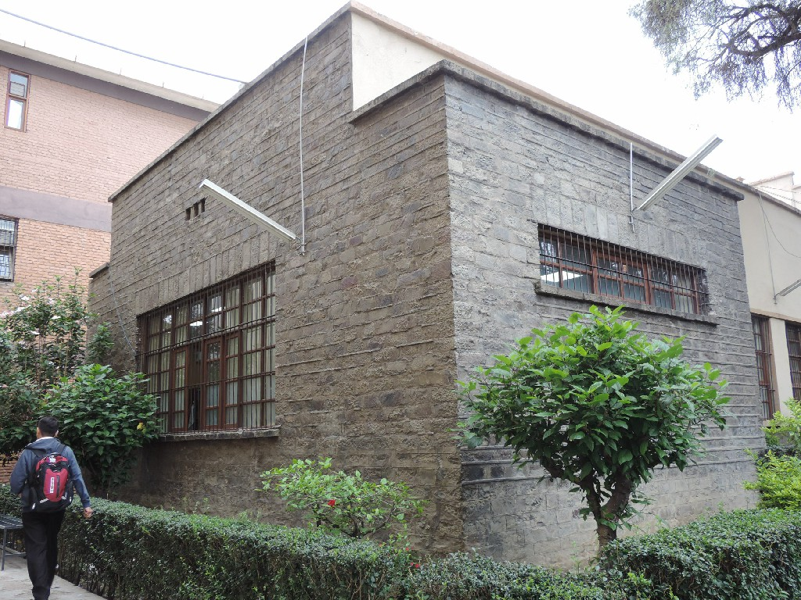

Invitamos la comunidad académica a seguirnos en el CICLO DE PRESENTACIÓN DE LIBROS a través de Facebook Live y Google Meet.
ISe invita a presentar artículos científicos en las diferentes disciplinas, sobre el COVID-19 y las connotaciones del mismo en la sociedad boliviana.
Dirigido a estudiantes de la Facultad de Humanidades que cursan Taller de Tesis o están en modalidad de titulación.
Creado el 21 de marzo de 1984 en base a un proyecto presentado por el Lic. Juan Araos Uzqueda, designado como Docente Encargado hasta 1986. Luego se incorporó el Dr. Jorge Jiménez Orellana para colaborar en la gestión y autorizar «evaluar y difundir» los primeros proyectos de investigación de los Departamentos Académicos, actuales carreas.
Después de la gestión de Rolando Ewel, fue designado como Director el RP Dr. Lorenzo Calzavarinni en junio de 1987. Bajo su dirección, y rodeado de prestigiosos intelectuales, se publica la Revista Semestral RUNAYAY, el boletín «Nispa Ninku».